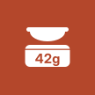
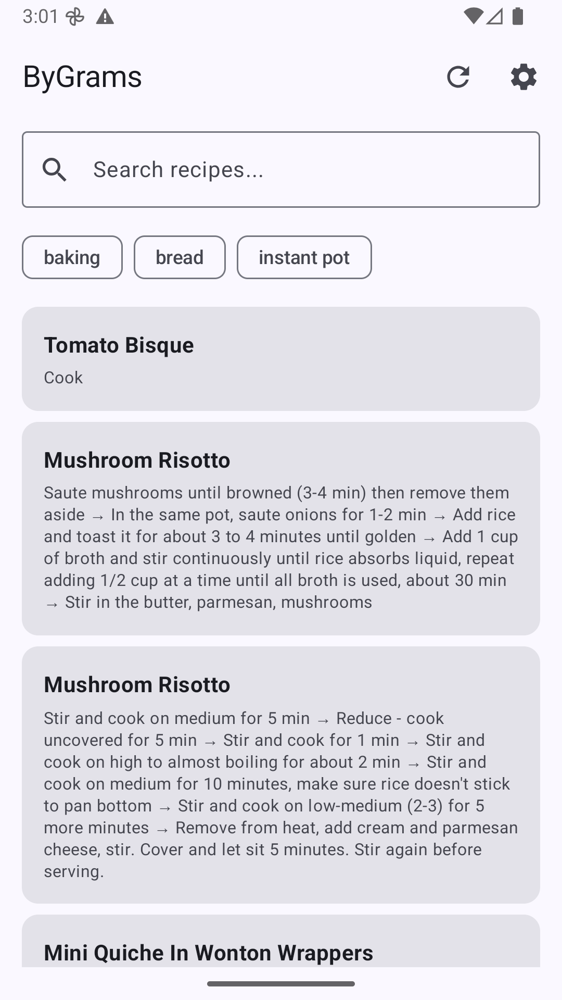
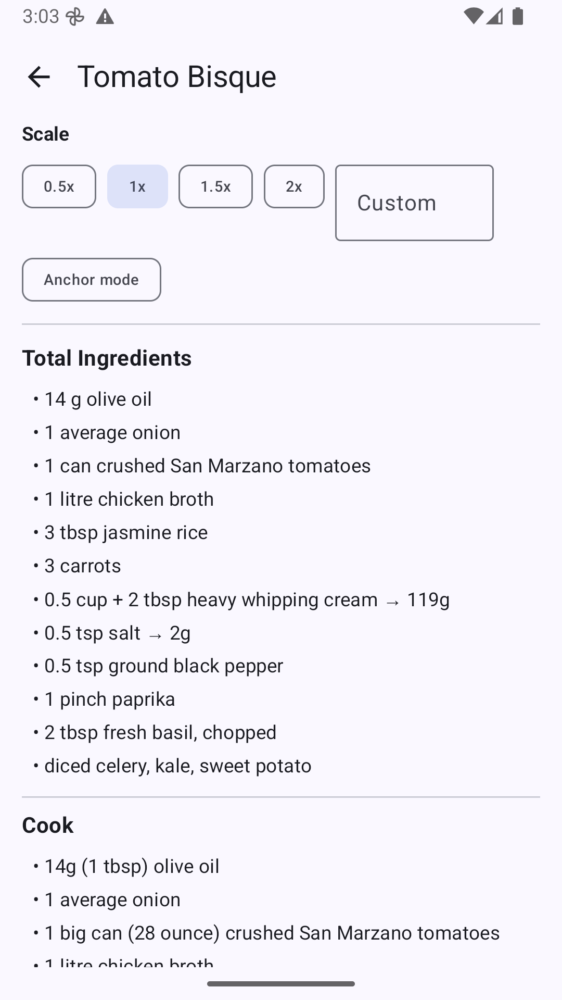
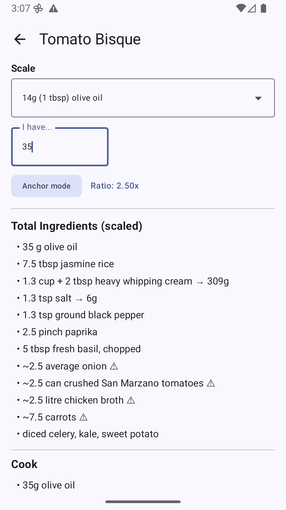

ByGrams
Cook from your own GitHub recipe repo. Weigh in grams, scale to any batch.
An Android recipe viewer for cooks who measure by weight. Your recipes live as plain YAML in a public GitHub repo that you control — ByGrams only ever reads them. There is no account, nothing to upload, and no way to get locked in.
Why weigh?
Cups measure volume, and volume lies. A cup of flour can vary by a third depending on how you scoop it. Grams don't. Weighing is faster, dirties fewer dishes, and turns scaling a recipe into arithmetic the app can do for you.
Your recipes stay yours
A recipe is a YAML file — text you can read, edit, diff and back up like any
other file in a repo. Subdirectories become tags automatically, so an
indian/ folder tags everything inside it. Delete the app and your
recipes are exactly where you left them.
Scaling
- Tap 0.5x, 1.5x, 2x, or type your own multiplier.
- Anchor scaling — pick an ingredient, say how much you actually have, and every other quantity follows. "I have 35 g of olive oil" becomes a 2.5x batch.
- Quantities that can't be scaled exactly are marked, not silently rounded.
In the kitchen
- Recipes are cached on the device, so a patchy signal at the stove doesn't matter.
- Volume and count measures show gram equivalents alongside the original, using a conversions file in your own repo.
- Ingredients repeated across steps are totalled into one list.
- Search by recipe name or by ingredient; filter by tag.



Getting started
- Create a public GitHub repo.
- Add your recipes as
.yamlfiles, following the recipe schema. walnutgeek/recipes is a working example you can copy from. - Point ByGrams at it as
owner/repo— orowner/repo:branchfor a branch other thanmain.
A conversions.yaml at the repo root maps ingredient aliases and
volume or count units to gram weights. That file is what teaches the app your
own ingredients, and powers the gram-equivalent display.
Writing recipes with Claude Code
Two Claude Code skills are published alongside the app. Neither is required — the format is simple enough to write by hand — but they save the typing:
cd your-recipes
npx skills@latest add walnutgeek/bygrams/setup-recipe-reposcaffolds a new recipe repo and writes down the conventions.convert-recipeturns a recipe URL, or pasted recipe text, into a YAML file in the right format.
Installing
ByGrams is not yet published to an app store. For now, build it from source — the repository has instructions; you'll need JDK 17+ and the Android SDK.